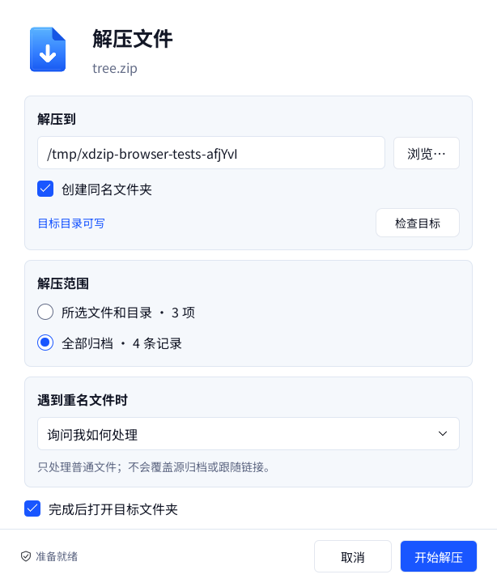
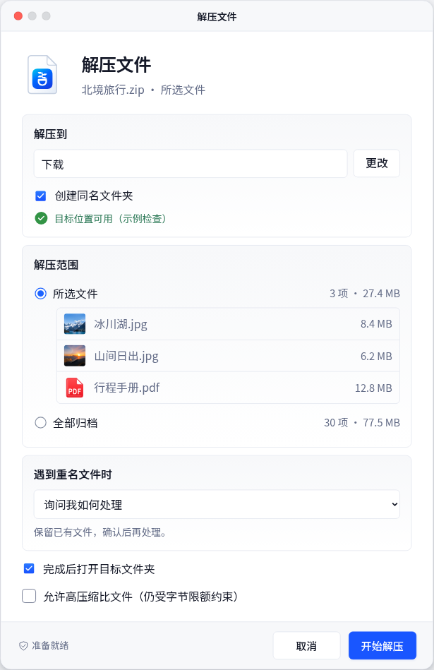
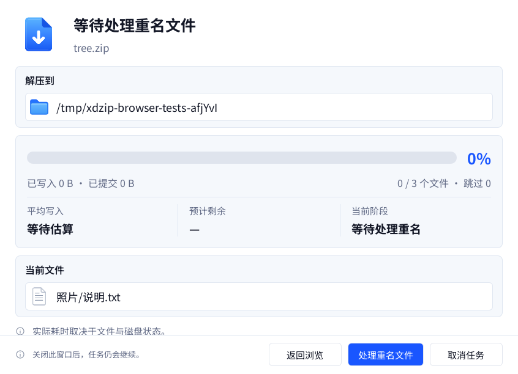
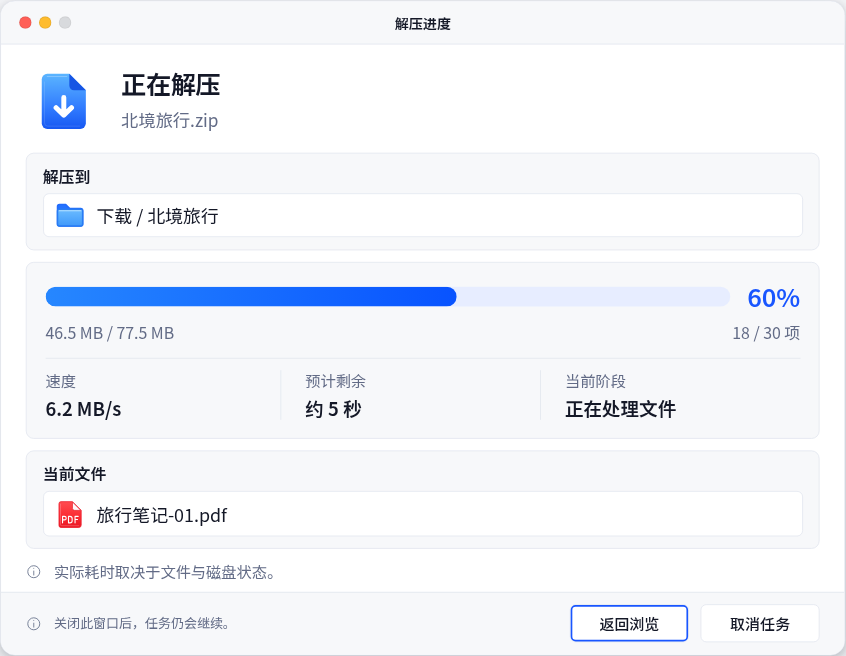
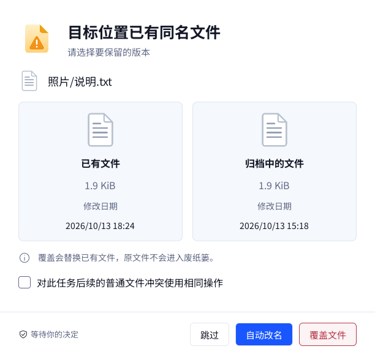
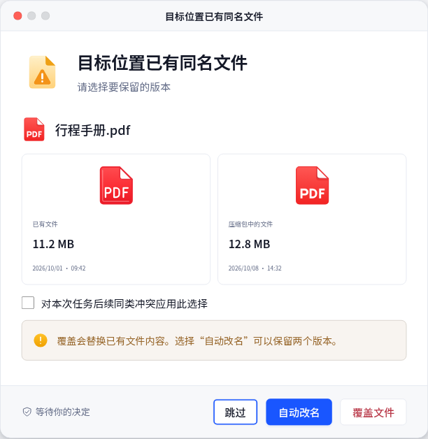
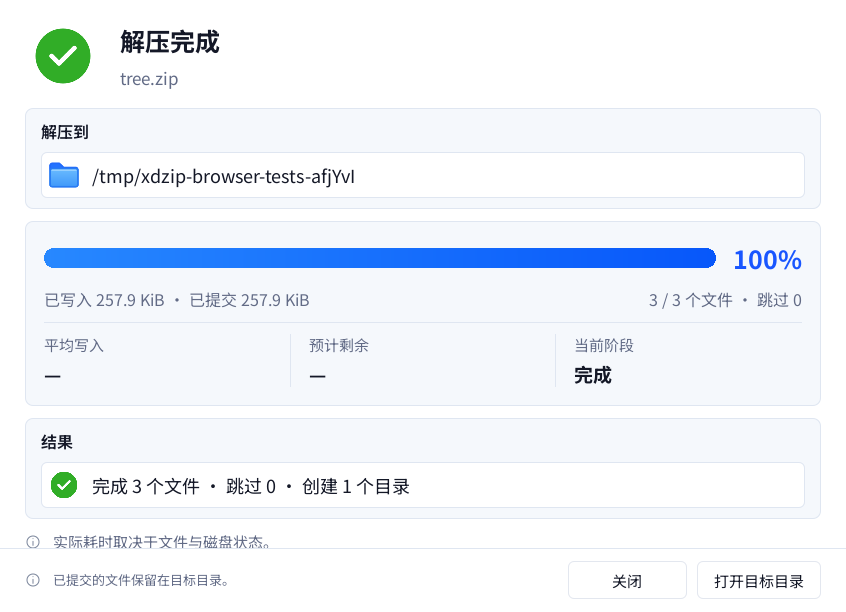

xdzip · M3 解压交付审阅
真实 ZIP Store / Deflate 解压、重名处理、取消、后台任务与异步退出已经接通。开发与三平台自动化验收已完成，完整回执在验收记录登记。自 2026-10-14 起，macOS CI 保留编译和原生测试，仅上传日志与 JSON，不再生成或上传 Apple Silicon 开发应用包；旧包回执保留为历史证据。这里展示真实 Qt 捕获、HTML 100% 逻辑尺寸捕获及已确认原稿，图片均未拼贴、重绘或放大修饰。
Qt：Linux / Qt 6.8.2 / offscreen software / DPR 1，自有 ZIP 夹具。HTML：Chromium / DPR 1 / 设计倍率 100%，旅行照片示例。两者数据不同；系统标题栏由原生操作系统绘制，Qt grabWindow 不含窗口装饰。小屏 Qt 正文可以滚动，footer 固定可达，不能用整图高度差直接判断尺寸不一致。
已核验的逻辑尺寸
| 项目 | Qt / HTML 规范 |
|---|---|
| 主窗口 | 1024 × 622 |
| 解压 / 进度 / 冲突窗口宽度 | 614 / 846 / 612 |
| 底部操作字体 / 提示字体 | 15 / 13 |
| 解压按钮高度 / 任务与冲突按钮高度 | 40 / 38 |
51 项 Qt 操作窗口检查验证宽度、字体、按钮高度、提示对齐与 footer 可达性，HTML 实测为冻结参考。它不是所有图形或字形的像素一致性认证。原稿保留品牌与视觉参考，后续密度、胶囊 Tab、目录树及真实任务字段调整以设计规范为准。
解压选项
实际 Qt


HTML · 100% 逻辑尺寸


已确认高保真原稿

任务进度与提示对齐
实际 Qt · 等待冲突决定


HTML · 进度演示


已确认高保真原稿

同名冲突
实际 Qt


HTML · 冲突演示


已确认高保真原稿

真实完成结果与退出决定



复现入口：scripts/capture-m3-html.py 与 Qt 测试的 XDZIP_M3_VISUAL_AUDIT。Qt 捕获回执、HTML 捕获回执、本地 Qt 日志。独立安全评审、最新 macOS 桌面操作、输入法、辅助功能与正式签名发行仍需单独验收。